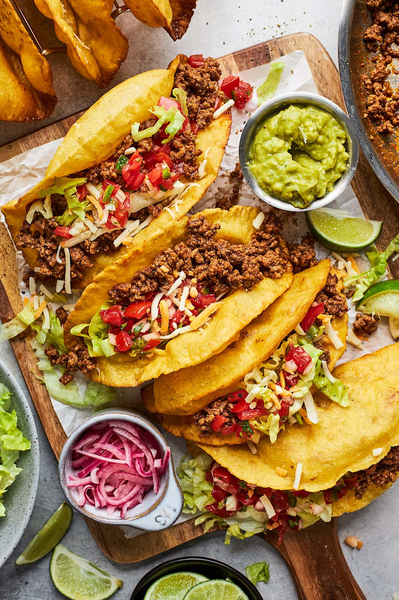

Tacos

Description
Tacos are a delicious meal to eat on Tuesdays, or any other day of the week. This are said to come from hispanic or latin american origins.
Tacos are prepared as either crunchy or soft. I prefer crunchy, but to each his own. Some people are crazy and don't know what a real taco is, but I'm not judging.
Ingredients
- Ground beef(80%lean/20%fat)
- Spices(chili powder, cumin, paprika, garlic powder, onion powder)
- Shredded Cheese
- Water
- Shells
Steps
- Heat a large skillet over medium heat.
- Brown the ground beef for about 5 minutes, breaking up the meat into small pieces using a wooden spoon. Cook until meat is no longer pink. Drain off any excess grease.
- Season with chili powder, cumin, paprika, garlic powder, and onion powder.
- Pour in the water and let simmer for 5 minutes or until thickened. Turn off heat and set aside
- Combine meat, cheese, and other desired toppings into the shells